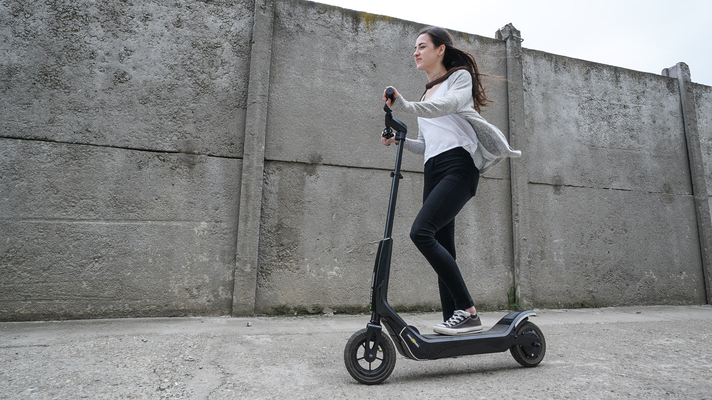
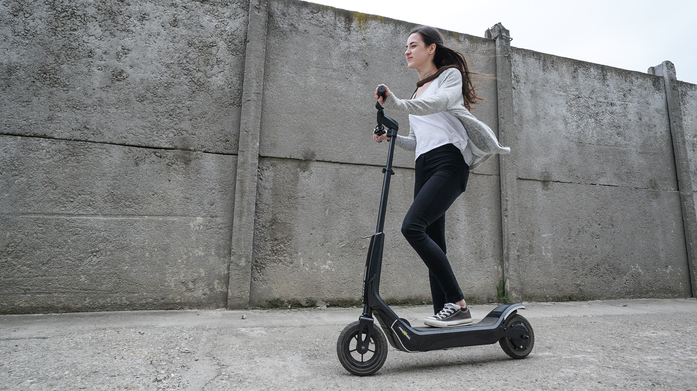

Ce este trotineta?
Trotineta este o platformă mică cu două sau mai multe roți, dirijată cu ajutorul unui ghidon și propulsată de cel care o conduce prin împingerea cu piciorul a pământului. Modelele actuale au doar două roți, sunt realizate în principal din aluminiu și se pliază pentru mai mult confort. Alte modele pot avea 3 sau 4 roți, sunt făcute din plastic, sunt de dimensiuni mari sau nu se pliază. Trotinetele de mai mare performanță făcute pentru adulți seamănă cu vechiul model de biciclete cu o roata din față mai mare
Trotinetele, în comparație cu bicicletele sau rolele, sunt ceva mai simple, mai ușor de folosit și nu sunt atât de riguroase când vine vorba de a cumpăra una nouă. Tot ce trebuie să ai în vedere este să fie compatibilă cu mărimea utilizatorului, respectiv copil-adult, să fie plăcut pe gustul fiecăruia la aspect și cam atât.
Există însă, și trotinete electrice. Tehnologia de a face o trotinetă electrică nu a apărut de foarte mult timp, este încă în proces de îmbunătățire dar vor urma multe îmbunătățiri la acest capitol. Ele ating viteze maxime de 35-45km/h și au o autonomie de 25-60km, în funcție de capacitatea acumulatorilor.
Trebuie să avem grijă! În urma unui studiu, trotinetele au cel mai mare procent la accidentarea copiilor.
Trotinetă pentru copii

Trotinetă electrică

Trotinetă pentru adulți

Trotinetă pentru copii
Trotinetă electrică
Trotinetă pentru adulți